Manual de usuario de Bullet POS
Todo lo que necesitas para vender, atender mesas, cuadrar la caja y administrar tu negocio. Usa el menú o el buscador de arriba, y toca cualquier imagen para verla en grande.

Soporte: thebulletes@gmail.com, o desde la app: Ajustes → Ayuda y app → Reportar un problema.
1 Conceptos básicos
Lo que conviene entender antes de empezar.
| Concepto | Qué es |
|---|---|
| PC Main | El equipo del administrador, normalmente la caja principal. Administra productos, precios, caja, personal, equipos y ajustes. Puede haber hasta 2. |
| Equipo secundario | Celular o tablet del personal. Vende y atiende mesas según los permisos que le dé el PC Main. No ve la pestaña Ajustes. |
| PIN | Número de 4 a 6 dígitos de cada persona. Con él entra y quedan a su nombre sus ventas y su turno. |
| Contraseña administrativa | Clave del negocio para lo delicado: cerrar caja, anular, autorizar equipos, cambiar la política. Solo la conoce el dueño. |
| Licencia | Permite vender mientras está vigente. Si vence, puedes consultar el historial, sacar respaldos y Excel, y cerrar caja, pero no hacer ventas nuevas. |
2 Primeros pasos
Instalar la app, activar el equipo y dejar el negocio listo.
2.1 Instalar y activar el equipo
- Abre el link de activación que te envió el proveedor. En iPhone, ábrelo en Safari.
- Acepta Activar este equipo para…
- Instala la app: en PC o Android pulsa Instalar Bullet POS; en iPhone sigue los pasos de Compartir ⬆ → «Agregar a inicio».
- Abre Bullet POS desde el ícono. El equipo espera hasta que el PC Main lo autorice.


2.2 El primer PC Main
- Con el equipo autorizado aparece Empezar desde cero (o Restaurar un respaldo si vienes de otro equipo).
- Ajustes → Equipos y personal → Configurar este equipo como Main con la contraseña inicial que te dio el proveedor.
- Crea tu PIN con Crear mi PIN.
- Sigue el asistente: datos del negocio, tu contraseña administrativa (anótala en un lugar seguro), forma de trabajo, productos y caja.
2.3 Sumar equipos
- Abre el mismo link de activación en cada celular o tablet e instala la app.
- En el PC Main: Ajustes → Equipos y personal → Dispositivos → Autorizar. Para reconocer el equipo, compara el identificador que muestra su pantalla de espera.
- Cada persona crea su PIN la primera vez.
2.4 Segundo PC Main (opcional)
- Autorízalo como equipo normal.
- En el PC Main: Autorizar segundo Main. Sale un código como SEFQ-FM2Z, que dura 10 minutos.
- En el otro equipo, toca el indicador de sincronización de arriba → Vincular como segundo PC Main, escribe el código y pulsa Vincular.
- Permisos (2.7.0): el primer PC Main es el Main principal (dueño). En Ajustes → Equipos y personal abre Permisos de …, elige qué puede hacer el segundo (o usa Administrador (recomendado)) y pulsa Guardar permisos. Vender, cobrar, mesas y ver el historial siempre están permitidos.
3 La pantalla principal
Pestañas arriba, contenido en el centro y la orden actual a la derecha (abajo en el celular).
| Pestaña | Para qué sirve | Quién la ve |
|---|---|---|
| Venta | Vender en mostrador y cobrar | Todos |
| Mesas | Atender mesas y cobrar cuentas | Todos |
| Productos | Catálogo y precios | PC Main |
| Inventario | Materia prima, recetas y costos | PC Main |
| Historial | Ventas, anulaciones y archivos | Todos (el secundario ve solo las suyas) |
| Caja | Abrir, operar, cerrar y cuadrar la caja; turnos | PC Main |
| Ajustes | Negocio, equipos, personal y seguridad | PC Main |
Indicadores de arriba
- Sincronización: el estado de la conexión. Tócalo para ver el detalle de lo pendiente y de los errores.
- Último respaldo: hace cuánto se hizo el último respaldo; se pone en rojo si hace mucho.
- Turno: quién tiene el turno abierto y desde cuándo. Tócalo para iniciarlo o cerrarlo.
- Avisos del PC Main: solicitudes de cobro, turnos por aprobar y ventas por revisar.
4 PIN y bloqueo del equipo
Cada persona entra con su PIN; el equipo se bloquea solo si nadie lo usa.

- Escribe tu PIN y la app reconoce quién eres.
- Tras unos minutos sin uso, el equipo se bloquea. El PC Main también.
- En el PC Main solo entra un PIN de administración, o Usar contraseña administrativa.
- Con un turno abierto, solo entra su dueño o un administrador.
- Tras 5 PIN equivocados hay que esperar 60 segundos.
- Si el PIN se cambió hace poco en otro equipo, con internet la app lo comprueba en el servidor antes de decir «PIN incorrecto»; el primer intento puede tardar unos segundos.
- ¿Olvidaste tu PIN? Un administrador lo cambia en Personal y PIN → Restablecer PIN.
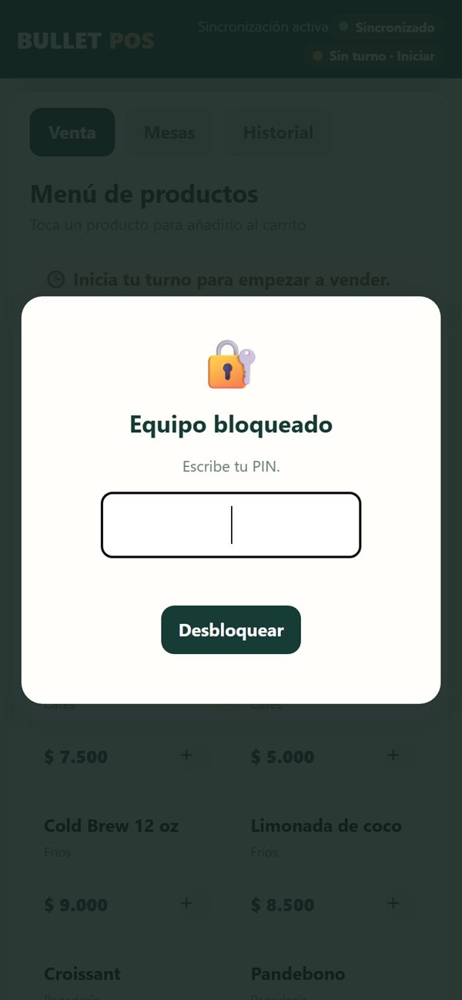
5 Turnos
El turno agrupa las ventas de una persona en un equipo, desde que empieza hasta que termina.
Iniciar turno
- Toca el indicador de turno o Iniciar turno.
- Escribe tu PIN y, si quieres, una observación.
- Si el negocio pide aprobación, el botón dice Pedir inicio de turno. El equipo espera al PC Main, y el tiempo del turno cuenta desde que lo aprueba. Necesita internet.

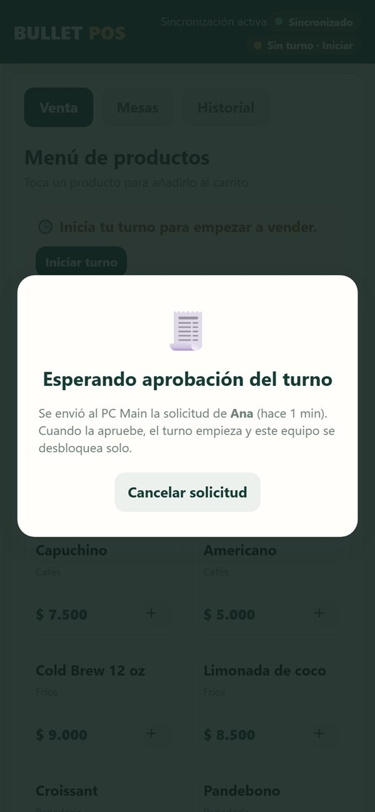
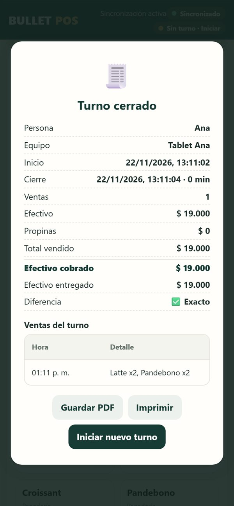
Cerrar turno
- Indicador de turno → Cerrar turno.
- Revisa el resumen, escribe el efectivo que entregas y las observaciones.
- El equipo queda bloqueado con el resumen. Desde ahí: Guardar PDF, Imprimir o iniciar un nuevo turno para la siguiente persona.
En el PC Main

- Aprobar o rechazar los turnos que piden los meseros (aparece un aviso arriba).
- Cerrar un turno administrativamente si el equipo se apagó, se perdió o se quedó sin batería: pide la contraseña y un motivo. También se puede desde el reinicio y al reportar un equipo perdido.
- Ventas que llegan después de un cierre administrativo: aparecen en «Por revisar» para Marcar como revisado.
- Confirmar entrega: registra que recibiste el efectivo del turno.
6 Vender (mostrador)
Agrega productos, elige el pago y confirma.
- Agrega productos tocándolos. Filtra por categoría o usa el buscador.
- Lector de código de barras (opcional): escanea sin el cursor en ningún campo y el producto entra solo.
- Ajusta cantidades con – / + en «Orden actual».
- Propina: marca la sugerida (10 %) o escribe una personalizada.
- Método de pago: Efectivo, Tarjeta, Nequi, Daviplata o Transferencia. En efectivo escribe con cuánto paga, o pulsa Exacto, y la app calcula el vuelto.
- Dividir el pago (efectivo más otro medio): marca la casilla.
- Pulsa Confirmar venta.
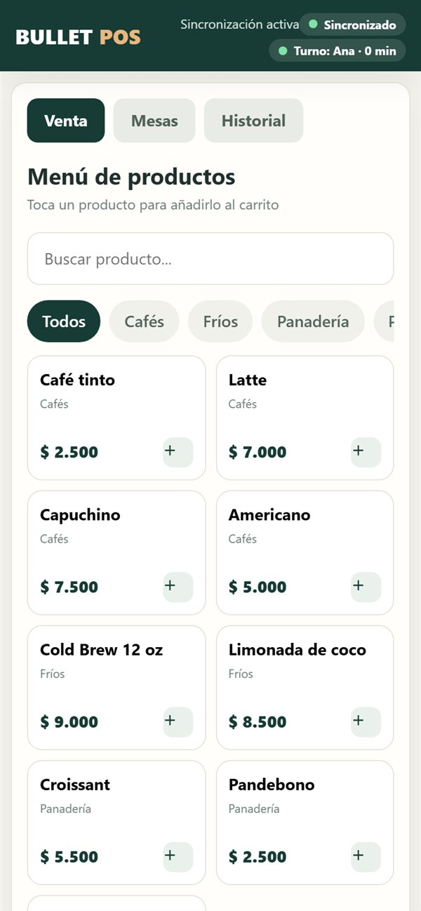

7 Comprobantes

- Imprimir: ticket de 58 mm, 80 mm, hoja carta o A4.
- Compartir PDF: por WhatsApp, correo u otra app.
- Enviar por correo: abre tu app de correo con el comprobante.
- Desde el Historial puedes reimprimir el de cualquier venta.
8 Mesas
Cuentas abiertas que todos los equipos ven al instante.


- Toca una mesa libre para abrirla y agrega productos.
- Corrige productos mientras no se haya iniciado el cobro.
- Mover mesa: pasa la cuenta completa a otra mesa.
- Abono parcial: registra pagos parciales.
- Cobrar: la cuenta se congela al iniciar el cobro, y la mesa se libera solo cuando la venta queda registrada. Cancelar cobro si te equivocaste.
- Venta rápida: vuelve a la venta de mostrador.
- Anular cuenta: solo el PC Main, con contraseña y motivo.
9 Solicitudes de cobro
Para equipos sin «Cobro directo», típico del perfil «Negocio con meseros».
- El mesero arma la orden o la mesa y pulsa cobrar. Se envía una solicitud al PC Main, con una nota opcional («paga con billete de 50.000»).
- El PC Main ve Ver solicitudes, la carga y cobra, o la rechaza con un motivo.
- La venta queda a nombre del mesero, cobrada por el PC Main.
10 Caja
Base, ventas por medio de pago, movimientos, arqueos y cierre.

Durante el día
- Abrir caja con la base del día. Sin caja abierta no se vende.
- Movimientos de caja: ingresos y salidas con motivo, con contraseña.
- Arqueo parcial: cuenta el efectivo sin cerrar.
- Corte X: imprime el estado actual sin cerrar.
Cerrar caja

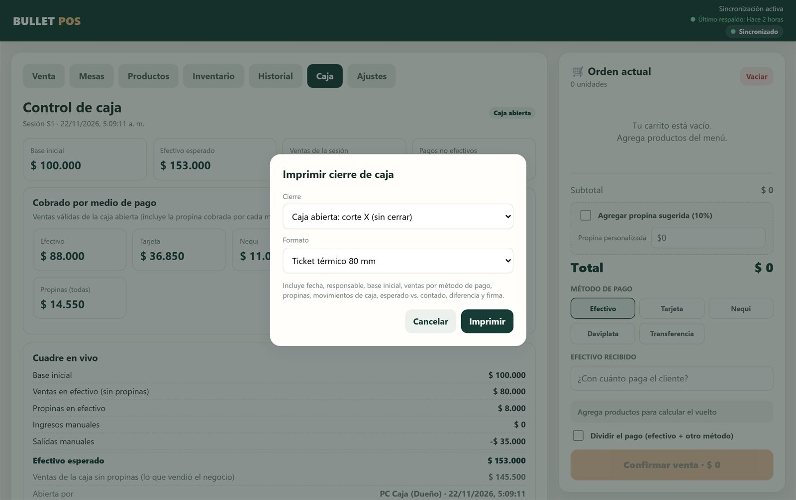
- Cerrar caja (con contraseña).
- Cuenta el efectivo; puedes hacerlo por denominaciones.
- Si aplica, registra el datáfono y las transferencias verificadas.
- Revisa esperado, contado y diferencia; si es grande, escribe una observación.
- Imprimir cierre: incluye base, ventas por medio de pago, propinas, cada movimiento de caja, la diferencia y la firma.
11 Historial de ventas
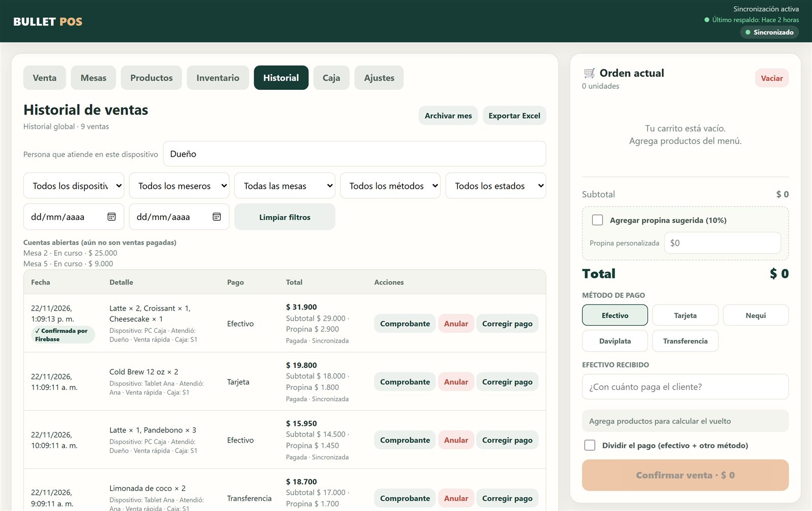
- Comprobante: reimprimir o compartir.
- Anular (PC Main): con motivo; la venta queda marcada y deja de sumar. Si descontó inventario, se devuelve.
- Corregir pago (PC Main): cambia el medio de pago, con registro.
- Archivar mes, Exportar Excel, Respaldo JSON y Restaurar JSON. Haz un respaldo cada semana.
12 Productos

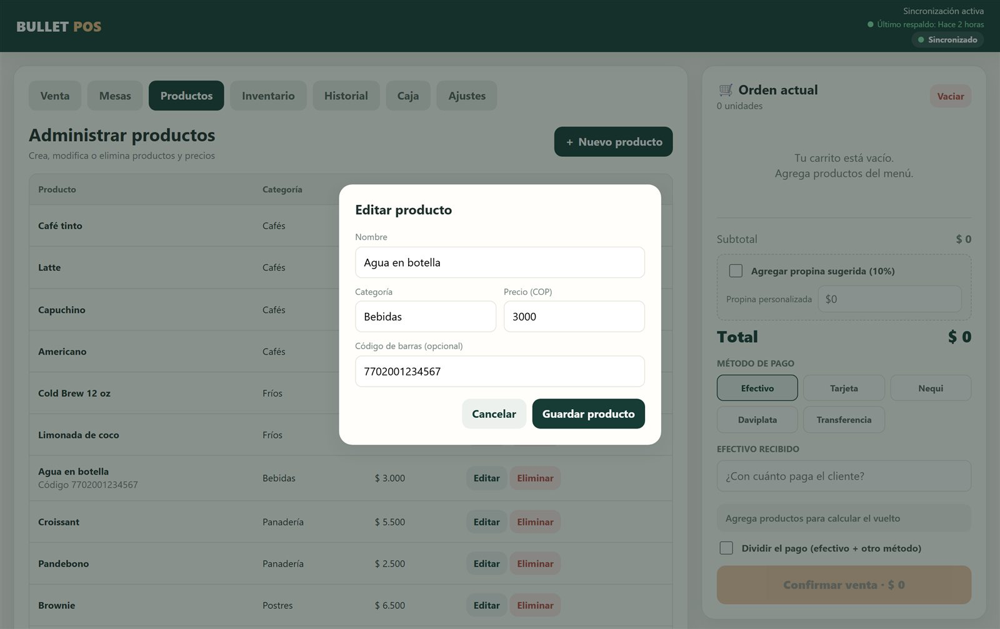
- Nuevo producto: nombre, categoría, precio y, opcionalmente, el código de barras (único).
- Importar Excel: columnas Producto, Categoria, Precio_COP y Codigo_barras (opcional). Reemplaza el catálogo.
- Cada tamaño es un producto aparte; las adiciones van en una categoría «Adiciones».
- Los cambios llegan solos a todos los equipos.
13 Inventario y costos
Opcional. Cada venta descuenta su receta y te dice cuánto ganas de verdad.

- Tipos de elemento: materia prima, insumos, preparaciones (lotes) y reventa (1 a 1).
- Cada elemento tiene: unidad base y unidad de compra (1 kg = 1.000 g), stock mínimo, proveedor y costo. El stock y el costo promedio se calculan solos.
- Movimientos: Compra, Merma, Ajuste, Conteo físico y Producir lote. No se borran: Corregir crea un movimiento contrario.

14 Ajustes
Solo en el PC Main, en 5 secciones con resumen.

🏪 Negocio
Los datos del comprobante (nombre, NIT, dirección, teléfono), la licencia y el negocio al que está activado el equipo, con el link para otro equipo.
👥 Equipos y personal
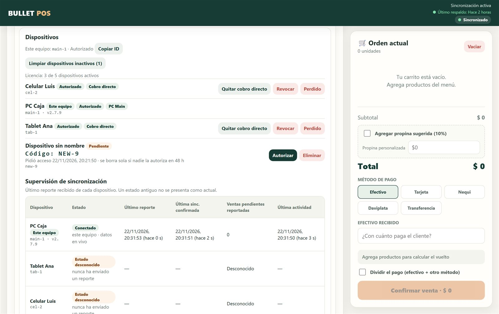
- Dispositivos: Autorizar, Cobro directo, Revocar (con plazo o con borrado), Reportar perdido, Eliminar y la supervisión de sincronización. Al eliminar un equipo que tiene turnos abiertos, la app lo advierte y los cierra administrativamente.
- Personal y PIN: agregar personas, restablecer PIN, desactivar.
- Administración principal: cambiar la contraseña y administrar el segundo PC Main.
🔑 Permisos del segundo PC Main
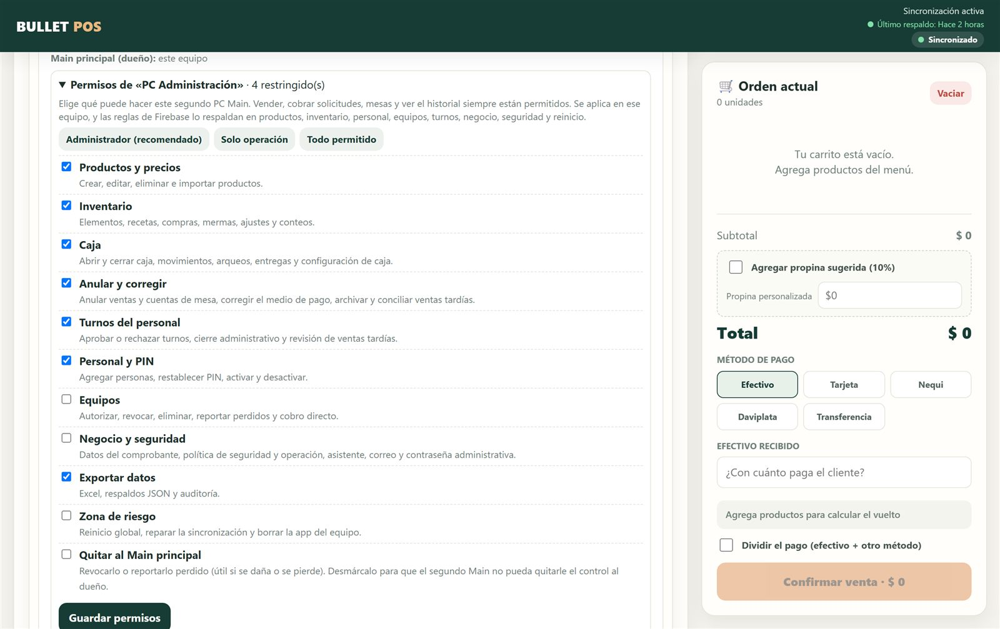
El primer PC Main es el Main principal (dueño). Desde él se decide qué puede hacer el segundo, para que uno sea del dueño y el otro de un administrador. Abre Permisos de «…», marca o desmarca y pulsa Guardar permisos (pide la contraseña).
- Administrador (recomendado): todo lo del día a día, sin Equipos, Negocio y seguridad, Zona de riesgo ni Quitar al Main principal.
- Solo operación: caja y turnos. Todo permitido: como antes.
- Vender, cobrar, mesas y ver el historial siempre están permitidos.
- El cambio llega al instante y funciona también sin internet. En el segundo Main aparece arriba de Ajustes lo que no puede hacer; si toca un botón restringido, la app le avisa y no hace nada.
- Mientras no guardes permisos, el segundo Main puede todo.
🛡️ Seguridad y operación
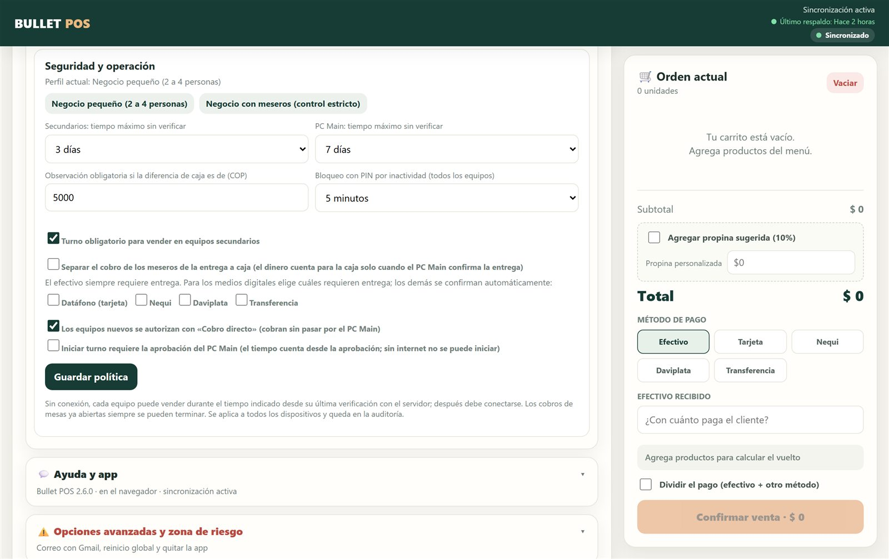
| Negocio pequeño (2 a 4 personas) | Negocio con meseros | |
|---|---|---|
| Quién cobra | Todos los equipos | El PC Main (los meseros envían solicitudes) |
| Turnos | Opcionales, sin aprobación | Obligatorios y aprobados por el PC Main |
| Entrega a caja | Automática | Separada |
| Sin conexión | 3 días en secundarios / 7 en el Main | 8 h / 24 h |
| Bloqueo con PIN | 5 min | 2 min |
💬 Ayuda y app
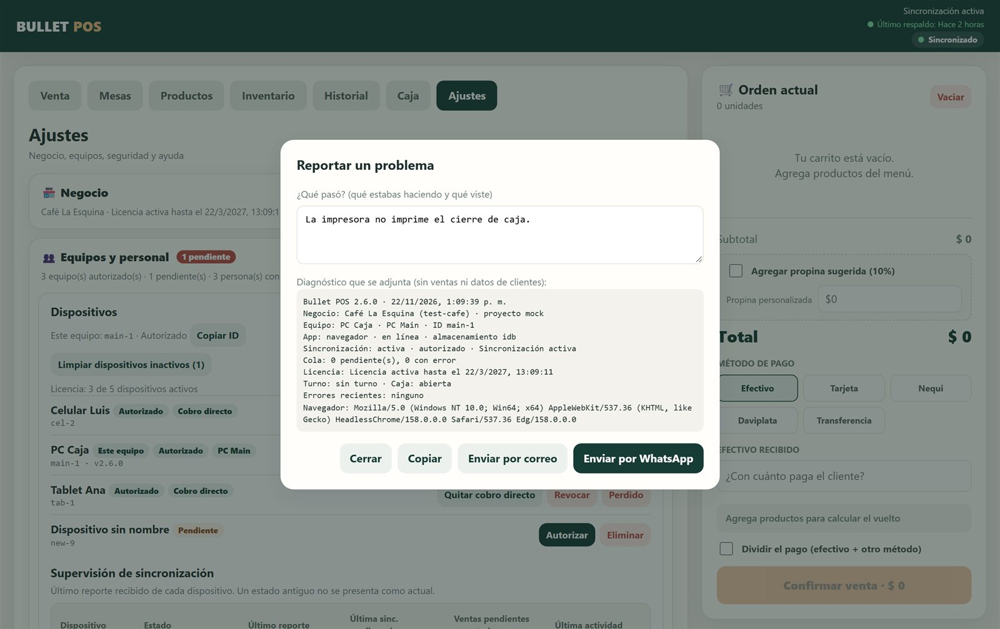
- Reportar un problema: el diagnóstico se envía por WhatsApp o correo, sin ventas ni datos de clientes.
- Escribir a soporte y Asistente de configuración.
- Instalar como app, y el estado de la sincronización con Reparar sincronización.
⚠️ Opciones avanzadas y zona de riesgo
- Correo con Gmail (opcional).
- Reinicio global de historial: borra ventas, cajas y turnos en todos los equipos. Pide escribir REINICIAR y la contraseña, y permite cerrar turnos abiertos de equipos apagados. No se puede deshacer: haz un respaldo antes.
- Quitar Bullet POS de este equipo: borra lo que la app guardó en el equipo antes de desinstalarla.
15 Trabajar sin internet
- La app sigue vendiendo sin internet; las ventas se envían solas al volver la conexión, sin perderse ni duplicarse.
- Cada equipo trabaja sin conexión hasta un tiempo máximo (ver Seguridad y operación). Después pide conectarse.
- Las mesas compartidas y las solicitudes de cobro necesitan internet para verse en los otros equipos.
16 Buenas prácticas de seguridad
- No compartas tu PIN: las ventas quedan a tu nombre.
- La contraseña administrativa solo la conoce el dueño.
- Administradores: usen un PIN de 6 dígitos.
- Si un equipo se pierde, repórtalo de inmediato en Dispositivos.
- Haz un respaldo JSON cada semana y guárdalo fuera del equipo.
- Cierra la caja todos los días y revisa las diferencias.
- Antes de desinstalar, usa «Quitar Bullet POS de este equipo».
- No compartas el link de activación en grupos ni redes.
17 Preguntas frecuentes
«Este equipo aún no está autorizado»
El PC Main debe autorizarlo en Ajustes → Dispositivos. Revisa que el equipo tenga internet.
No me deja vender
Revisa que haya caja abierta, que tengas turno (si es obligatorio) y que la licencia esté vigente. El mensaje en pantalla dice qué falta.
Olvidé mi PIN
Un administrador lo restablece en Ajustes → Personal y PIN → Restablecer PIN. Si hay un turno abierto, restablece el PIN de la persona que abrió ese turno: si el equipo dice «Ese PIN es de X, pero el turno es de Y», esa persona quedó registrada dos veces; restablece el de Y y, cuando no tenga turno, desactiva el otro registro.
Olvidé la contraseña administrativa
Contacta a soporte.
Pedí turno y no pasa nada
El PC Main debe aprobarlo (le aparece un aviso arriba). Ambos equipos necesitan internet.
Un equipo se apagó con el turno abierto
En el PC Main: Caja → Turnos → «Cerrar turno» (cierre administrativo), con motivo.
«N ventas llegaron después de un cierre»
Revísalas en Caja → Turnos → «Por revisar» y márcalas como revisadas.
El lector de código de barras no agrega
Que no haya un campo con el cursor activo, que el producto tenga ese código y que el lector esté en modo teclado con Enter al final.
Diferencia en el cierre de caja
Revisa los movimientos de caja, las entregas pendientes y las ventas tardías, y escribe la observación.
«Sin licencia» o «Licencia vencida»
Contacta a soporte para renovarla. Tus datos no se pierden.
Sincronización con errores
Toca el indicador → «Revisar / reintentar». En el PC Main: Ajustes → Ayuda y app → «Reparar sincronización». Si sigue, «Reportar un problema».
Aparece «Equipo eliminado (…)» con un turno abierto
Es un turno que quedó abierto de un equipo que ya se eliminó. Ciérralo con «Cerrar turno administrativamente» desde Caja → Turnos o desde el reinicio global.
«Este PC Main no tiene permiso para…»
Es el segundo PC Main y el Main principal no le habilitó esa función. El dueño la habilita en Ajustes → Equipos y personal → Permisos.
Cambié de celular
Instala la app en el nuevo con el link de activación y pide que lo autoricen. Al viejo, revócalo o usa «Quitar Bullet POS de este equipo».
18 Glosario
| PC Main | Equipo principal que administra el negocio (hasta 2). |
| Main principal | El primer PC Main (del dueño): decide los permisos del segundo. |
| Equipo secundario | Celular o tablet del personal. |
| PIN | Número de 4 a 6 dígitos que identifica a cada persona. |
| Contraseña administrativa | Clave del negocio para las acciones delicadas. |
| Turno | Periodo de trabajo de una persona en un equipo. |
| Base | Efectivo con que se abre la caja. |
| Corte X | Estado de la caja sin cerrarla. |
| Reporte Z | Cierre de caja impreso. |
| Arqueo | Conteo del efectivo para compararlo con lo esperado. |
| Cobro directo | Permiso de un equipo para cobrar sin pasar por el PC Main. |
| Solicitud de cobro | Pedido de un mesero para que el PC Main cobre. |
| Entrega a caja | Dinero que el mesero entrega y el PC Main confirma. |
| Link de activación | Enlace que conecta un equipo a su negocio. |
| Respaldo JSON | Archivo con la copia completa del negocio. |
| Auditoría | Registro de lo que se hizo, quién y cuándo. No se puede borrar. |